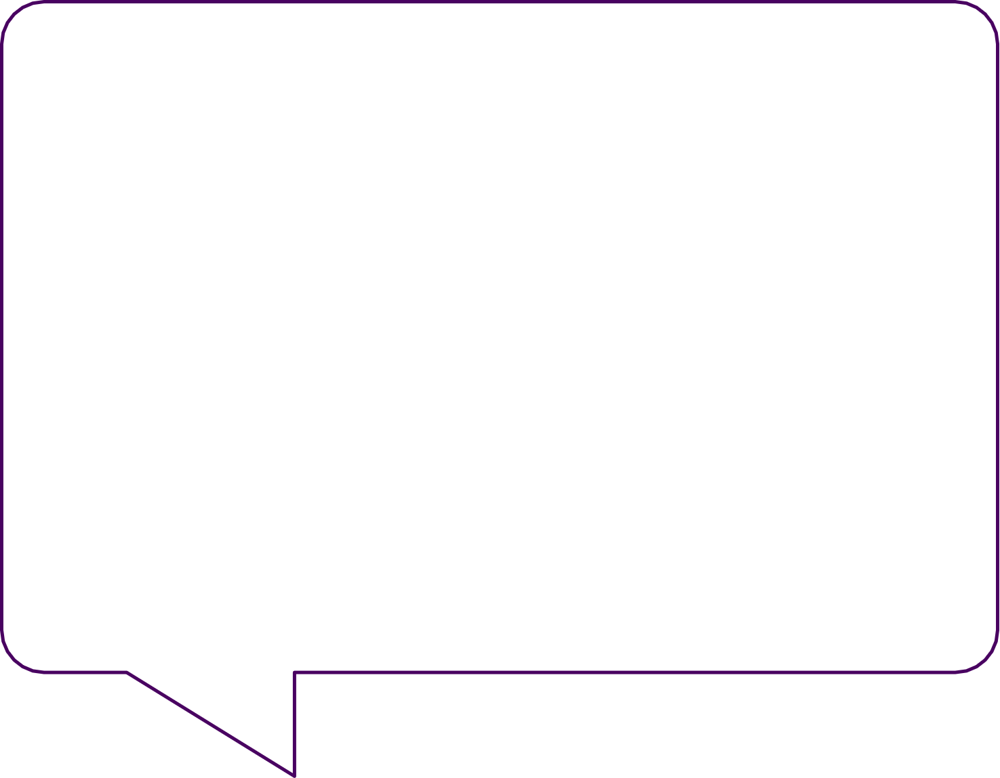
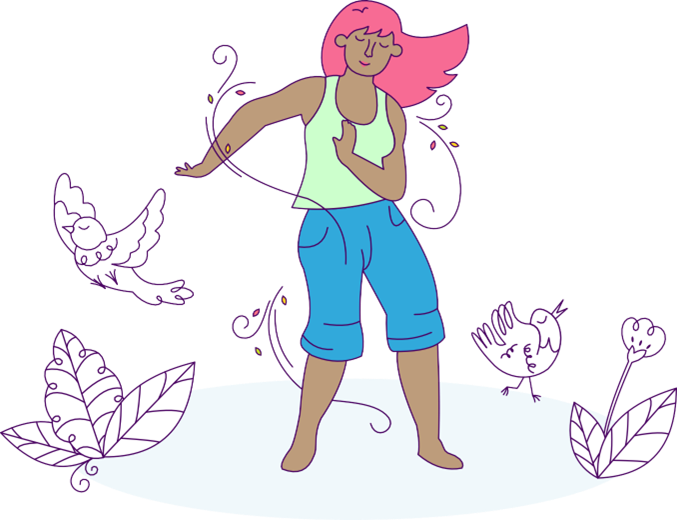
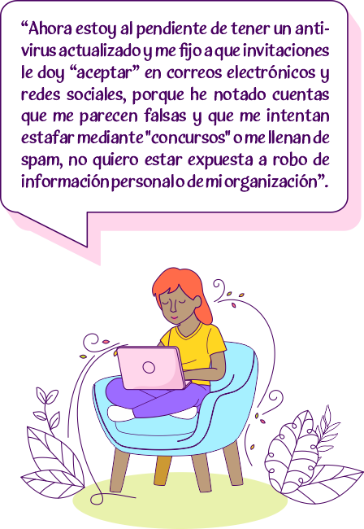

AUTOCUIDADO FÍSICO
Mantengo un cuerpo saludable: Cuido mi salud física, sexual, reproductiva y una nutrición adecuada. Para descansar elimino el estrés, duermo libre de tensiones y realizo rituales de sanación.
 Lo que se sabe
En esta clave resaltamos los siguientes puntos a tomar en cuenta en el cuidado de la salud física:
Caricia para el alma
Presiona la imagen y descubre el poema
Cuida de ti misma
Vuelve a ti misma, conecta contigo y cuida de ti misma.
Tu cuerpo te necesita, tus sentimientos te necesitan, tus percepciones te necesitan.
La niña herida que hay en ti te necesita.
Tu sufrimiento necesita que lo reconozcas.
Vuelve a ti y ocúpate de todo eso.
Practica el caminar consciente y la respiración consciente.
Hazlo todo con atención plena para poder estar realmente ahí, para ser capaz de amar.
Autora: Thich Nhat Hanh.
El arte de cuidar a tu niño interior.
Te invitamos a descargar y leer manual donde se menciona más informacion útil.
AUTOCUIDADO EMOCIONAL Y MENTAL
Conecto con mis emociones: Libero mi voz y mi fuerza para sanarme, expreso asertivamente lo que pienso, siento y quiero. Me permito ser resiliente, a través de la risa, el gozo, el placer sexual y erótico. En armonía busco ayuda y me dejo ayudar.

Lo que se sabe
Segun la Organización Mundial de la Salud, "La salud es un estado de bienestar en el cual el indiduo es consciente de sus propias cpacidades, puede afrontar las tensiones normales de la vida, puede trabajar de forma productiva y fructífera, y es capaz de hacer una contribucioón a su comunidad".
El Instituto Mexicano del Seguro Social, nos dice que, la salud mental es importante porque puede afectar la salud fisica, por ejemplo, los transtornos mentales aumentan el riesgo de accidentes cerebrovasculares,diabetes tipo 2 y enfermedades cardiacas.
El cuidado de la salud mental puede ayudar a:


Caricia para el alma
AUTOCUIDADO LABORAL
Equilibrio mi activismo, mi vida personal y laboral: Participo en redes basadas en la filosofía feminista. Aplico el protocolo de seguridad individual y colectiva al realizar tareas de activismo público. Pongo límite a agendas y horarios laborales, respeto fines de semana, vacaciones y días festivos.

AUTOCUIDADO DIGITAL
Cuido mi seguridad digital: Hago uso estratégico de la tecnología, plataformas digitales, redes sociales, conozco mis derechos digitales y de qué manera la ley me protege. Promuevo la desconexión digi
